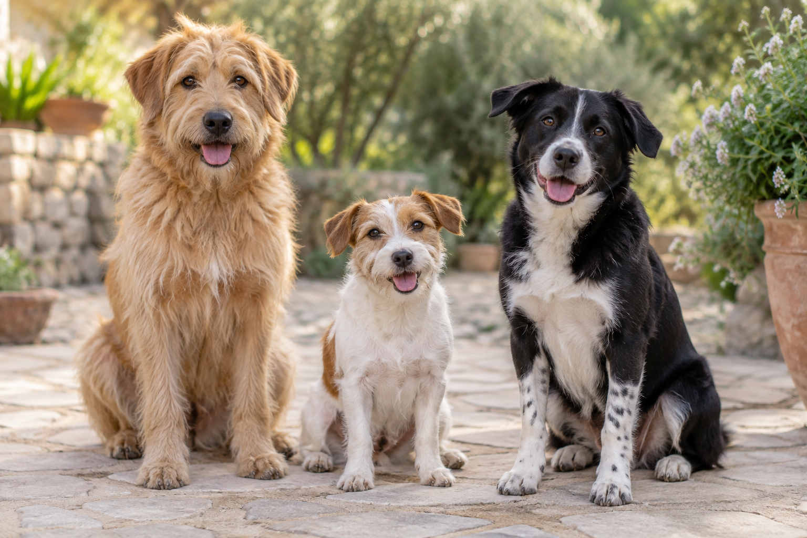

01El explorador
Milo
Siempre listo para descubrir un sendero y convertir un paseo normal en una pequeña aventura.
Su plan perfecto
Caminar contigo, olfatear cada rincón y terminar el día descansando cerca.
AMISTADES QUE DEJAN HUELLA
Hay encuentros que lo cambian todo. Conoce a Milo, Luna y Bruno: tres personalidades, muchas ganas de compartir el camino.

TRES FORMAS DE ROBARTE EL CORAZÓN
Siempre listo para descubrir un sendero y convertir un paseo normal en una pequeña aventura.
Caminar contigo, olfatear cada rincón y terminar el día descansando cerca.
Una mirada atenta y mil motivos para jugar. El tamaño nunca limita sus ganas de estar contigo.
Un juego nuevo, una tarde tranquila y un lugar a tu lado para mirar el mundo.
De esos amigos que hacen que cualquier lugar se sienta un poco más como casa.
Una salida al aire libre, compañía y tiempo para descubrir las pequeñas cosas.
UNA CONVERSACIÓN PARA EMPEZAR
Cuéntanos quién te robó una sonrisa. Aquí puedes probar cómo responde un formulario a tus datos.
Este es un ejercicio de interfaz. Usa datos de ejemplo: no se envía ni se almacena la información.
Activa un paso desde el panel para construir Huellitas.